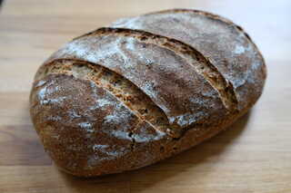

Schnelles Sauerteigbrot mit Kartoffel
Bei diesem Rezept kommt es auf die Temperatur an. Sowohl Gare des Sauerteig, Stockgare als auch Stückgare finden bei 27 Grad statt. Dafür geht der Teig recht schnell auf. Wer also reifes Anstellgut parat hat und heute ein Brot braucht, für den ist dieses Rezept perfekt.
Für die Regelung der Temperatur verwende ich eine Fermentierbox. Dies ist nicht zwingend notwendig, ermöglicht mir aber, auf einfache Weise eine konstante, genaue Temperatur zu halten. Alternativ kann der Ofen mit eingeschalteter Lampe verwendet werden. Hierbei am Besten mit einem Termometer die Temperatur überprüfen. Ist der Ofen zu kalt, für ein paar Minuten kurz Heißluft oder Umluft auf 50 Grad einschalten, bis die gewünschte Temperatur erreicht ist. Ist der Ofen zu warm (er sollte nicht wärmer als 30 Grad sein!), kurz die Ofentür öffnen.
Das Rezept richtet sich nach diesem Rezept.

Sauerteig
- 60 g Anstellgut, aktiv
- 60 g Weizenmehl, Type 1050
- 30 g Wasser, warm
Hauptteig
- Sauerteig
- 100 g Kartoffel, gekocht(entspricht etwa einer mittelgroßen Kartoffel)
- 180 g Roggenvollkornmehl
- 200 g Weizenmehl, Type 1050
- 120 g Weizenvollkornmehl (alternativ Weizenmehl Type 1050)
- 10 g Salz
- 310-330 g Wasser, warm
Das sehr aktive Anstellgut mit dem Mehl und Wasser mischen und zu einem homogenen Teig verarbeiten. Bei 27 Grad 2,5 Stunden reifen lassen. Der Teig sollte sich in dieser Zeit im Volumen verdoppelt haben.
Die Kartoffel(n) schälen und mit einer Gabel zu einem feinen Brei zerdrücken. Mit einem Teil des warmen Wassers vermischen und mit den restlichen Zutaten zum Sauerteig geben. Etwa 5 Minuten kneten.
Beim 27 Grad 2,5 Stunden gehen lassen, in der ersten Stunde 2 mal vorsichtig dehnen und falten. Der Teig sollte wieder sein Volumen sichtbar vergrößern.
Vorsichtig auf eine leicht bemehlte Arbeitsfläche geben und mit bemehlten Händen rundwirken oder zu einem länglichen Leib formen.
In einen bemehlten Gärkorb setzen und bei 27 Grad etwa 2 Stunden gehen lassen.
Währenddessen den Ofen auf 250 Grad aufheizen, ggf. mit Stahl oder Topf.
Nach der Gehzeit das Brot auf den Stahl, in den Topf oder auf ein Backblech setzen, den Ofen auf 230 Grad stellen und abgedeckt oder mit Dampf 20 Minuten backen.
Dann die Dampfquelle entfernen und bei 210 30-35 Minuten fertigbacken.
